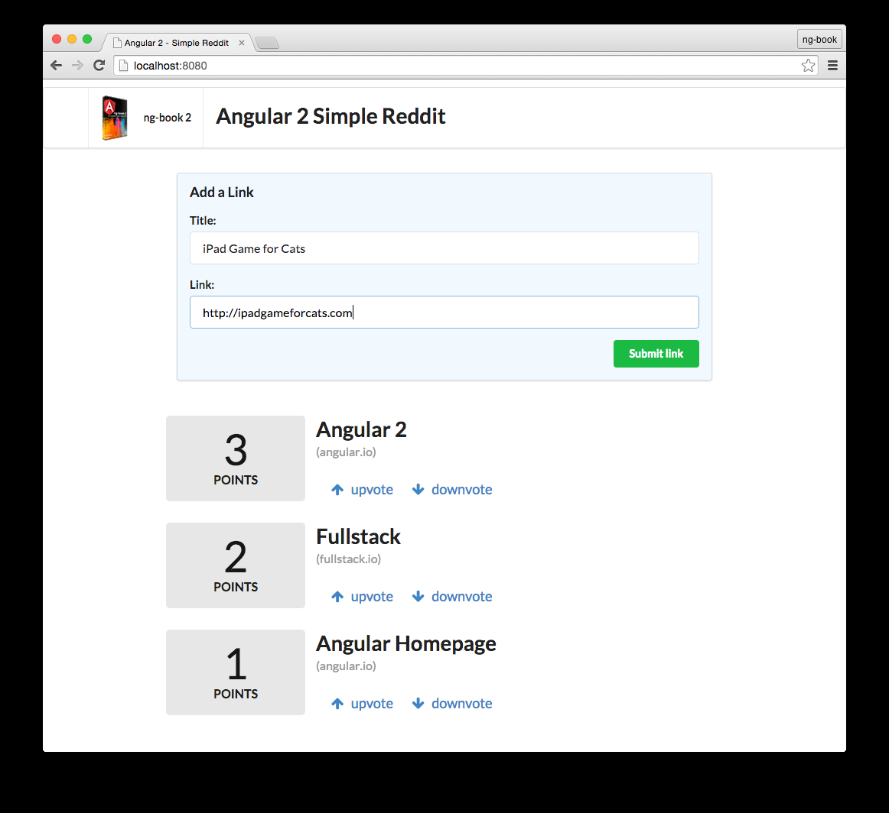

Semplice copia di Reddit
In questo capitolo costruiremo un'applicazione che permetterà all'utente di pubblicare un articolo (con un titolo e una URL) ed esprimere dei voti. Puoi pensare a quest'app come un inizio di un sito stile Reddit. In questa semplice app copriremo concetti essenziali di Angular inclusi:
- Sviluppare componenti personalizzati
- Accettare input degli utenti da una form
- Mostrare liste di oggetti nella vista
- Intercettare clicks degli utenti e fare azioni su essi
- Fare il deploy su un server
Alla fine di questo capitolo saprai prendere una cartella vuota, costruirci dentro un'applicazione Angular e pubblicarla in produzione. Avrai le basi per comprendere come sono costruite le applicazioni Angular e delle solide fondamenta per svilupparene una.

Primo, un utente pubblicherà un nuovo link dopodichè avrà la possibilità di dare un voto positivo o negativo ad ogni articolo. Ongi link avrà un punteggio e potremmo votare su ogni links che giudicheremo utile.
In questo progetto e per tutto il libro, useremo TypeScript. TypeScript è un superset di JavaScript ES6 che aggiunge i tipi. Non parleremo di TypeScript in profondità in questo capitolo, ma andremo più in profondità di TypeScript nei prossimi capitoli. Non preoccuparti se non ti senti confidente con la nuova sinstassi. Se sei familiare con ES5/ES6 dovresti essere capace di seguire e parleremo di più di TypeScript fra poco.